Web Design & Development Projects
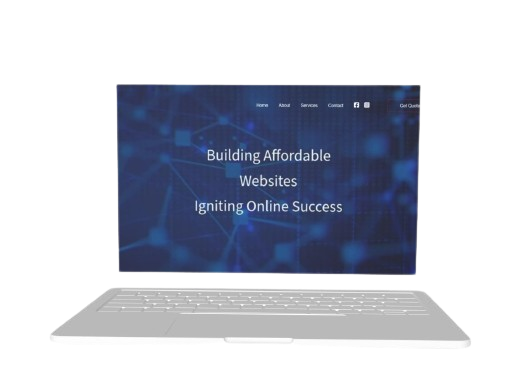
Business Marketing
Designed and developed a home page using HTML, CSS, Java Script, PHP, MySql.
Take a look
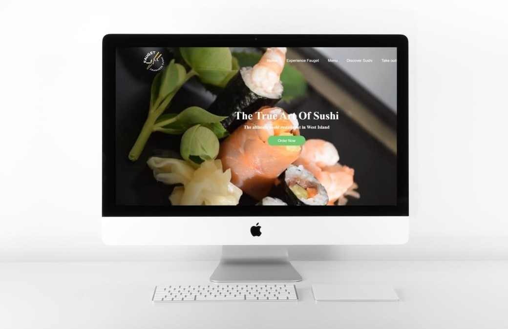
Fauget Restaurant
Designed & Developed a website: Showcasing Sushi Delights with Sketch, HTML, CSS, JavaScript, jQuery, Animation, Masonry, XML, JSON, API, and PHP
Take a look

Aritzia
Designed and developed a modern E-commerce home page for Aritzia using HTML, CSS, and JavaScript.
Take a look
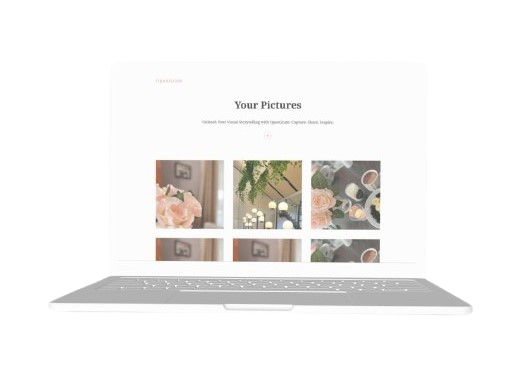
Build-Gallery-React
In this project, I utilized React.js to design and develop a dynamic gallery page, titled "Build-Gallery-React." The gallery page showcases a collection of images or content in an interactive and visually appealing manner.
Take a look
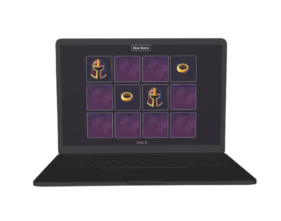
memory Game
In this project, I designed and developed a memory game website using React.js. The website features an engaging and interactive memory game where users can test their cognitive skills by matching pairs of cards within a set time limit.
Take a look
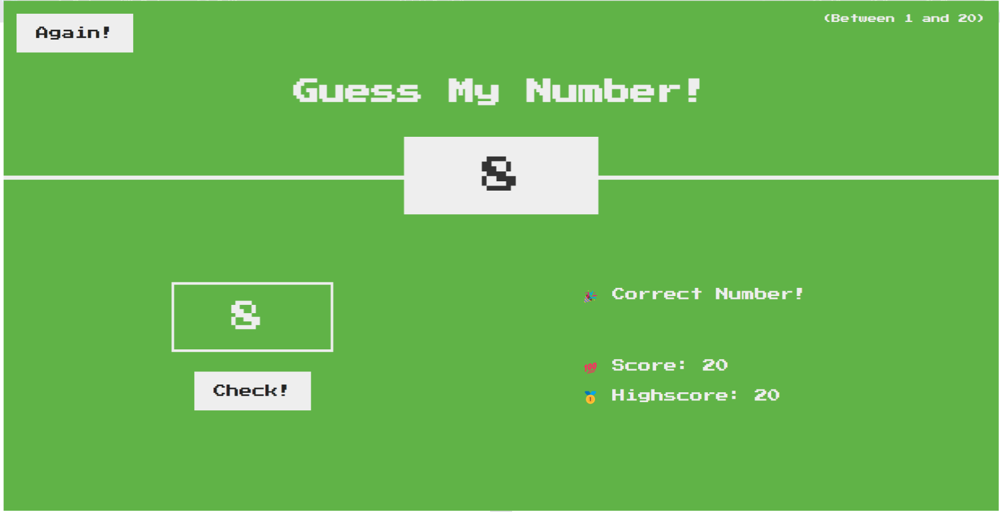
Guess Number
Guess My Number Game: Interactive Web Experience with HTML, CSS, and JavaScript
Take a look
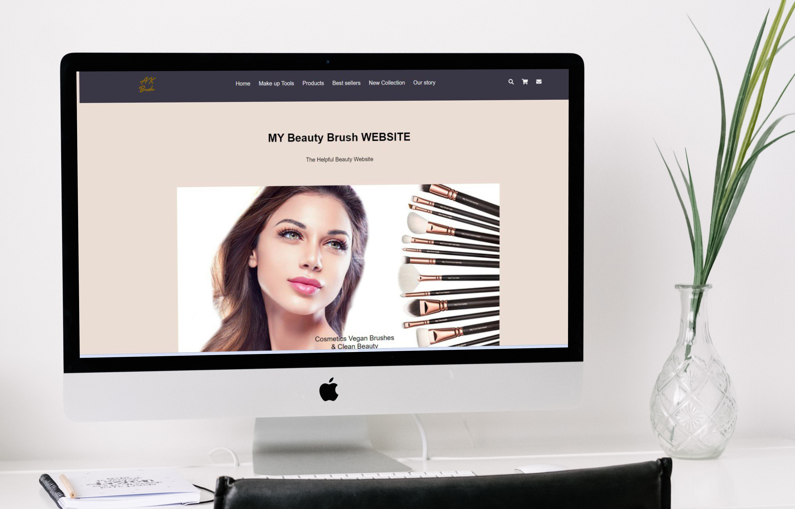
Brush
Designed and developed a home page using Sketch, Wireframe, Prototype, HTML, CSS, Java Script, Carousel Slick, Animation, Fancy box, Panzoom.
Take a look
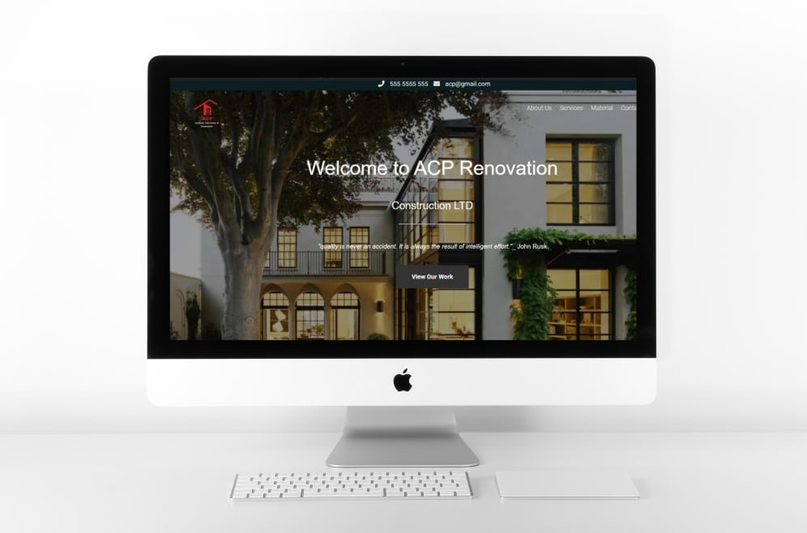
ACP Renovation
In the ACP Renovation WordPress project, I undertook a comprehensive process that included research, sketching, wireframing, prototyping, logo design, and development of a custom WordPress theme using PHP.
Take a look
UX UI Projects
Time Tracking App
The Time Tracking Application is designed to streamline work processes for both employees and managers. For employees, the app offers efficient time management tools, allowing them to log hours quickly and effortlessly. Additionally, they can generate detailed reports and stay informed about company news, all within a user-friendly interface. This not only saves time for employees but also enhances their productivity and workflow. Managers also benefit from the app's features, gaining insights into employee productivity and time allocation. With detailed reports and real-time tracking, managers can make informed decisions to optimize workflow and resource allocation. Overall, the Time Tracking Application not only simplifies time management but also improves communication and productivity across the organization, benefiting both employees and managers alike.
...Take a look

Liancha Herbal Tea
In this project, I developed the user experience (UX) and user interface (UI) for "Liancha Herbal Tea," an adaptive and sustainable website dedicated to promoting a minimal lifestyle and offering herbal and organic teas. Utilizing Figma, I created both desktop and mobile versions of the website to cater to users across different devices. The design focuses on simplicity and minimalism to reflect the brand's ethos and promote a clutter-free browsing experience. Through clean layouts, intuitive navigation, and soothing visuals, the website aims to educate users about the benefits of herbal and organic teas while encouraging them to make purchases. Furthermore, the website features a customizable blend product option, allowing users to create personalized tea blends to suit their tastes and preferences.
...Take a look
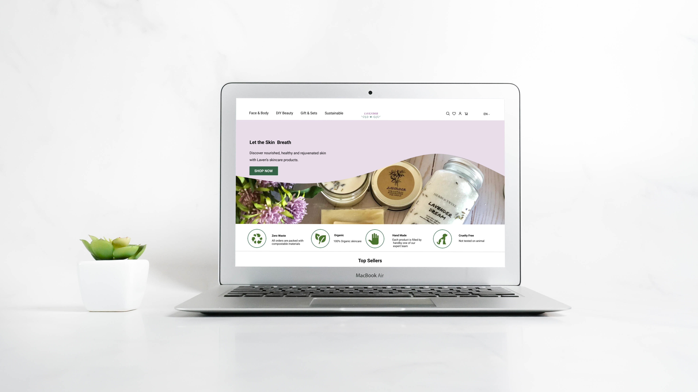
Lavender
In this project, I crafted the user experience (UX) and user interface (UI) for "Lavender," a website emphasizing sustainable practices with a focus on organic beauty products. Utilizing Figma, I created both desktop and mobile versions of the website to cater to users across different devices. The website features a user-friendly design, ensuring easy navigation and accessibility for all visitors. By employing clean layouts, intuitive menus, and engaging visuals, Lavender aims to educate and inspire users about the importance of sustainability in the beauty industry. Through thoughtful design choices and a commitment to sustainability, Lavender invites users to explore and support eco-conscious beauty products in a welcoming and inclusive online environment.
...Take a look
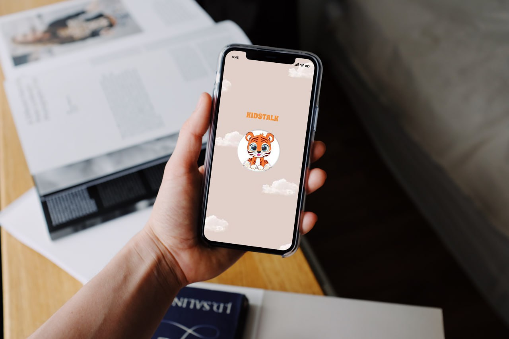
KidsTalk App
In this project, I designed the user interface (UI) and user experience (UX) for "KidsTalk," an application aimed at children between 2-6 years old, focused on language learning. Using Figma, I created an engaging and intuitive platform that facilitates language acquisition through interactive games, storytelling, and playful exercises. With a colorful and age-appropriate UI, KidsTalk encourages young learners to explore and interact while providing parents with tools to track progress and customize learning experiences.
...Take a look
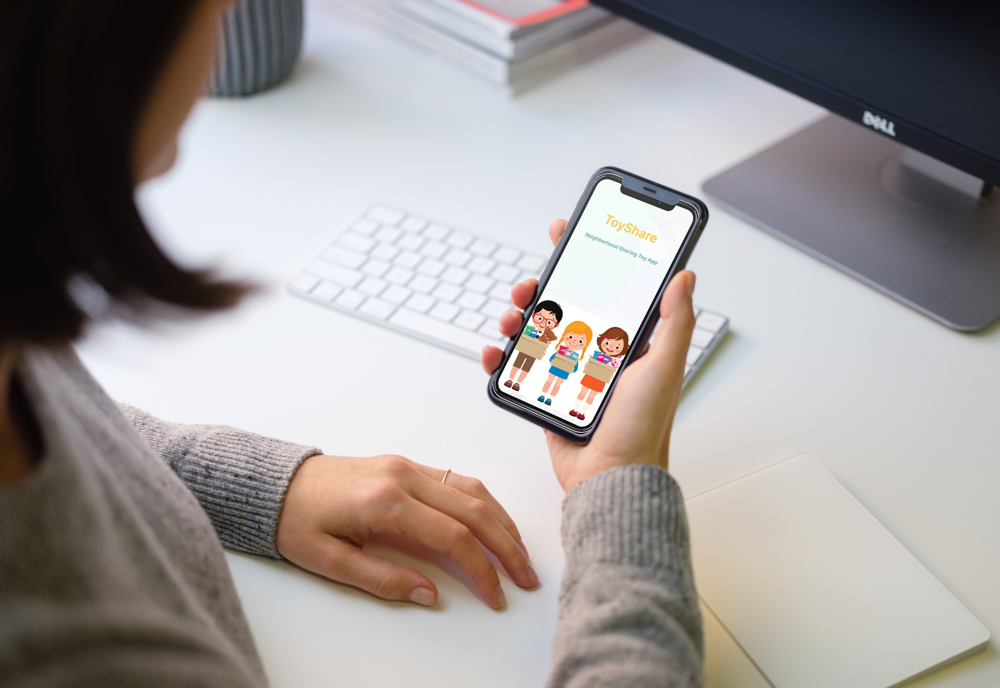
ToyShare App
I conceptualized and designed a user interface (UI) and user experience (UX) for an application called "ToyShare," tailored specifically for kids. I utilized Figma. To begin, I conducted research to understand the unique needs and preferences of users. With this insight, I crafted a playful and colorful UI design that appeals to audiences while maintaining simplicity and clarity for easy navigation. The UX design focused on creating a seamless and enjoyable experience to explore and interact with the app.
...Take a look

Redesign MTL Cupcake
I redesigned the user interface (UI) and user experience (UX) for MTL Cupcake, leveraging Figma. I began with research to understand the target audience and their needs. Based on this insight, I redesigned the UI to enhance usability and create a visually appealing interface that aligns with MTL Cupcake's brand identity. Using Figma, I iterated on wireframes and prototypes, incorporating user feedback to refine the design. I focused on improving navigation, simplifying the ordering process, and optimizing the overall user flow to ensure a seamless and delightful experience for customers.
...Take a look
Design Projects
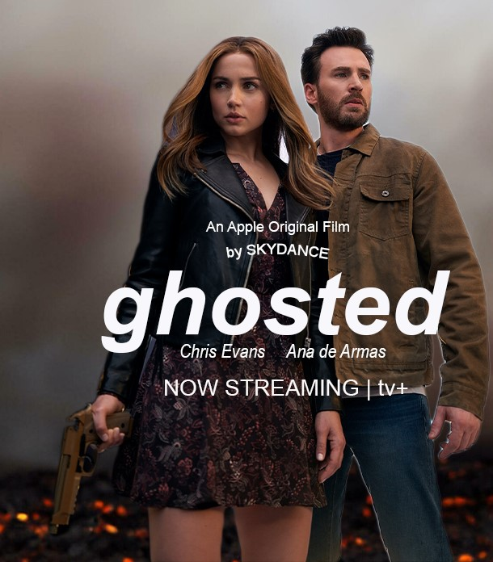
Photoshop
I created a film poster that captures the essence of the movie while incorporating all the essential elements of a typical film poster. I utilized a combination of images and text to create visual intrigue and convey the mood and theme of the film. This included incorporating elements such as the movie title, credits, and any other relevant information.
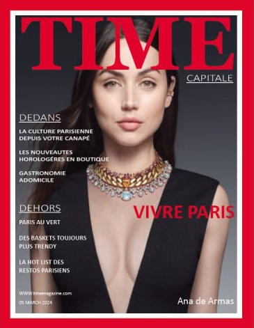
Photoshop
I created a Time Magazine cover page, leveraging the tools to create a visually captivating design. I selected compelling imagery and utilized typography to create a headline and text that resonate with the theme of the cover story.
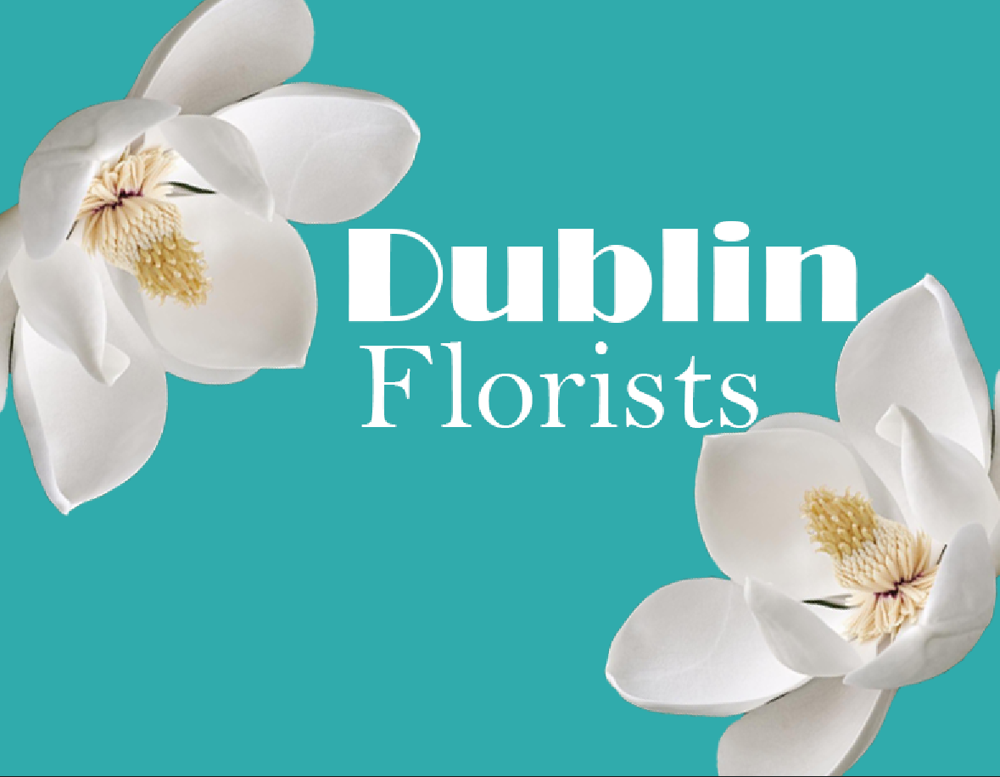
Photoshop
I created a visually captivating tableau by selecting and extracting image of flower using the object selection and quick selection tools,ensuring precise and clean cutouts, merging the imagery of flowers with typography.
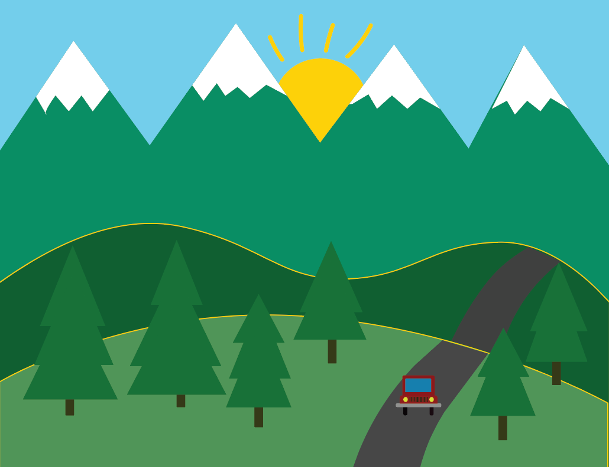
Illustration
I created a tableau using various techniques to capture a scene.
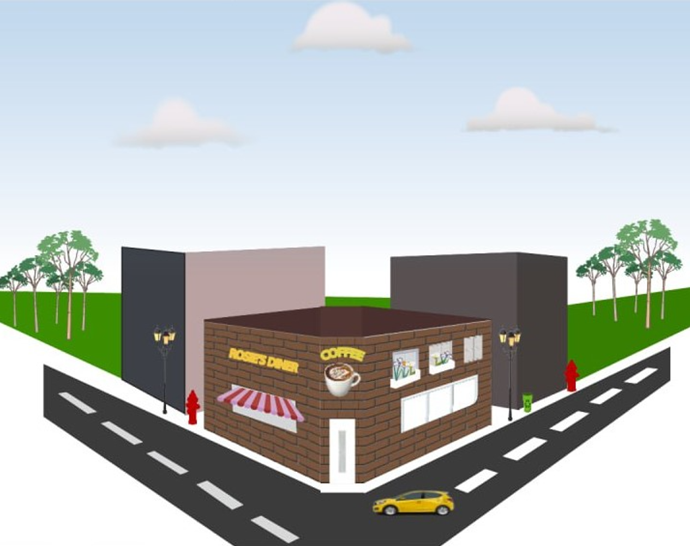
Perspective City in Illustrator
I created a city block using the perspective tool in Adobe illustrator.
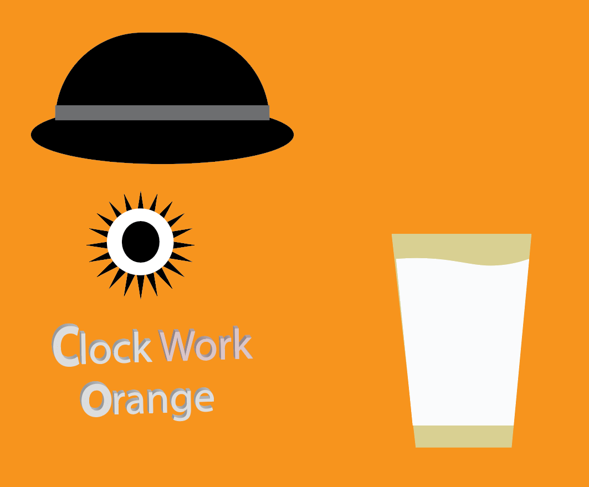
Illustration
Adobe Illustrator for created a multilayer poster using the features and tools. composition include typography and shapes.
Adobe After Effect
Adobe After Effect
Adobe After Effect
Developed by Alaleh Kash